User Manual
Complete guide to your H4M software-defined radio device running Mayhem firmware — from unboxing to advanced signal operations.
📋 Table of Contents click to collapse
Legal Notice & Responsible Use
Receiving vs. Transmitting
Receiving radio signals (passive listening) is legal in almost all countries. The H4M functions as a passive receiver in most apps — FM Radio, ADS-B, Spectrum Analyzer, POCSAG. No licence is required for receive-only operation.
Transmitting radio signals requires either a valid amateur radio licence (ham licence) or use within a designated licence-exempt ISM frequency band at permitted power levels. Without a licence, you may only transmit within the ISM bands listed below.
Licence-Exempt ISM Bands
These frequency ranges are generally available for low-power transmission without a licence. Verify your local regulations before transmitting.
| Frequency | Region | Common Uses |
|---|---|---|
| 433.92 MHz | Europe / Asia | IoT sensors, remote controls |
| 868 MHz | Europe | LoRa, smart meters |
| 902–928 MHz | North America | LoRa, 915 MHz IoT devices |
Features That Are Illegal to Use Against Others
Several Mayhem firmware apps are included for research and lab testing only. Using them against others or in public is illegal in most countries:
- GPS Simulator — Spoofing GPS signals interferes with navigation systems. Illegal in almost all jurisdictions.
- BLESpam — Flooding Bluetooth LE advertisement packets disrupts nearby devices. Illegal under radio interference laws.
- Jamming apps — Any deliberate signal jamming is illegal worldwide without specific government authorisation.
- Replaying security codes — Replaying garage door or key fob signals to gain unauthorised access is illegal.
Hardware Safety — Never Transmit Without an Antenna
What's in the Box
Open the Package
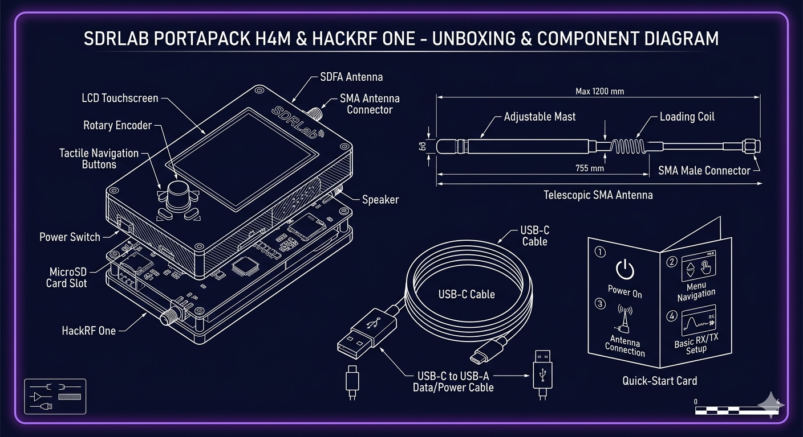
Carefully open the retail box and lay the contents on a flat surface. You should find: the H4M unit, one telescopic SMA antenna, one USB-C cable, and a quick-start card.
- Charging: Via USB-C at up to 1A. Full charge from empty takes approximately 2–3 hours.
- Runtime: Approximately 4–8 hours depending on TX/RX usage and screen brightness.
- Status display: Battery percentage, voltage (V), and current draw (mA) are shown in the top-right of the Mayhem home screen.
- Safe to use while charging: The device can operate on USB power. Charging current reduces automatically when full.
Inspect the H4M Unit
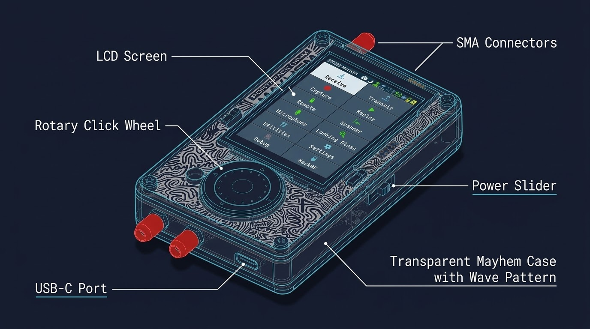
Examine the H4M closely. Confirm the 2.8" LCD screen is intact with no cracks, all navigation buttons are present and click cleanly, and the rotary encoder (the knob on the front) turns and clicks smoothly.
Check Accessories & SMA Connector Type
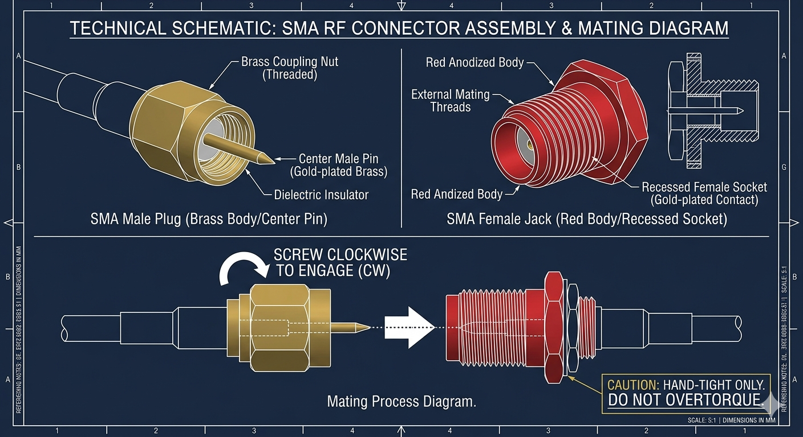
Inspect the telescopic antenna — it should thread onto an SMA male connector. The H4M unit has an SMA female port. Verify the USB-C cable fits both ends. If any item is missing or damaged, contact the seller before use.
Hardware Overview
Front Face — Screen & Controls
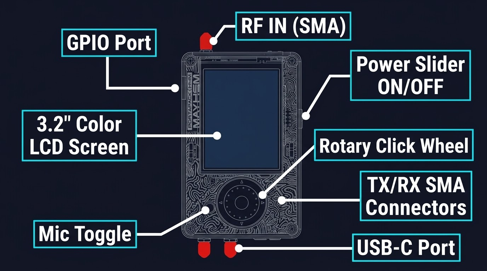
The front panel features a 2.8" colour LCD screen, four directional buttons (up, down, left, right), a rotary encoder (push to confirm, rotate to scroll), and a dedicated Back button to return to the previous screen.
Top Edge — RF Port & microSD Slot
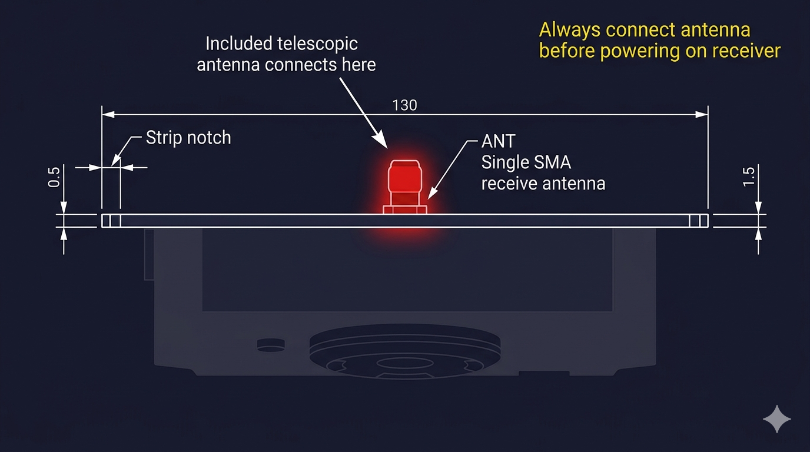
On the top edge you'll find the SMA female antenna port — always connect an antenna before any RF operation. Beside it is the microSD card slot (push to insert, push again to eject). A microSD card is required for map tiles, file capture, and replay functions.
Bottom Edge — USB-C Port & Headphone Jack
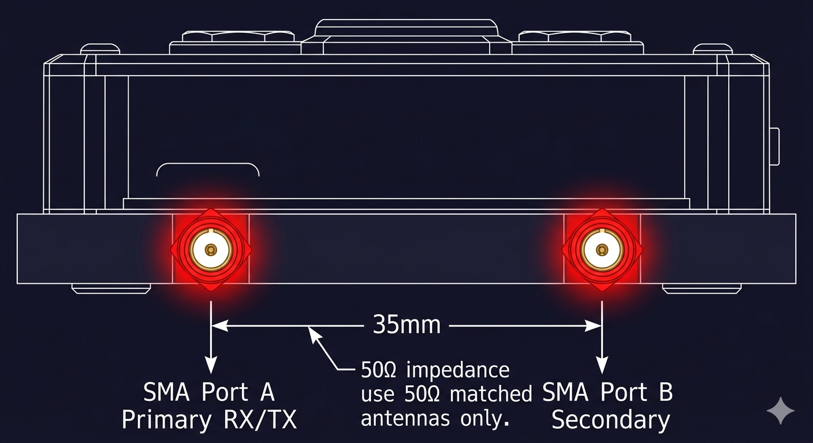
The bottom edge has the USB-C port used for charging and for connecting to a PC (firmware flashing, file transfer). Many H4M variants also include a 3.5mm headphone jack for private audio monitoring when using audio receiver apps.
Side — Power Button
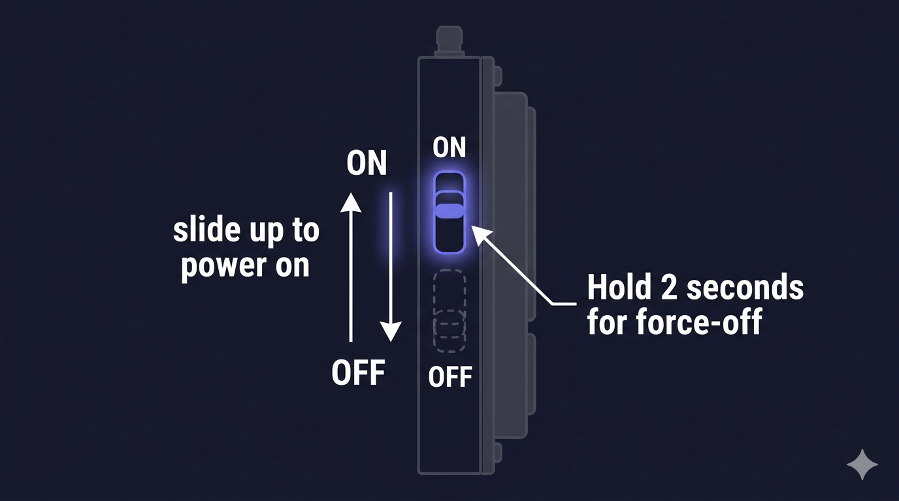
The power button is on the side of the unit. Hold it for approximately 2 seconds to power on, and hold again for 2 seconds to initiate a clean power-off from any screen.
SD Card Setup
A microSD card is optional for basic use but required for maps, IQ file capture, replay, and over-the-air firmware updates. Set it up before first boot.
Choose & Format Your microSD Card
Use a microSD card of at least 8 GB (32 GB or larger recommended for captures). The card must be formatted as FAT32 — exFAT and NTFS are not supported by Mayhem firmware.
- Windows: Right-click the card in File Explorer → Format → FAT32
- macOS: Disk Utility → Erase → MS-DOS (FAT) format
- Linux:
sudo mkfs.fat -F 32 /dev/sdX1
Create the Required Folder Structure
Create these folders in the root of the formatted card. Folder names are case-sensitive:
FIRMWARE/ ← .bin files for SD-based firmware update
CAPTURES/ ← IQ recording files saved by the Capture app
MAPS/ ← Map tile files for ADS-B and GPS map view
SETTINGS/ ← App configuration and frequency manager files
REPLAY/ ← .C16 / .C8 files for the Replay app
SAMPLES/ ← Signal sample filesMayhem firmware creates missing folders automatically on first boot, but creating them manually ensures correct card recognition.
Insert the Card
Locate the push-push microSD slot on the top edge of the H4M (beside the SMA antenna port). Orient the card with the contacts facing down and the notched corner aligned with the slot. Push firmly until you feel a click — the card is now locked. To eject, push again until a second click and the card springs out.
Download Map Tiles (Optional)
For the ADS-B map view and GPS-based apps, download map tile files and copy them into the MAPS/ folder. See the Mayhem wiki for the tile download tool and step-by-step instructions: github.com/portapack-mayhem/mayhem-firmware/wiki/Map
First Boot & Navigation
Power On & Boot Sequence
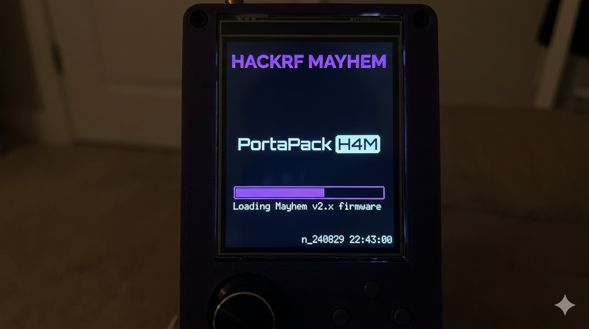
Hold the power button for 2 seconds. The Mayhem firmware boot logo appears on the LCD, followed by a brief splash screen showing the firmware version number (e.g., v2.x.x). Boot takes 3–5 seconds.
Main Menu Overview
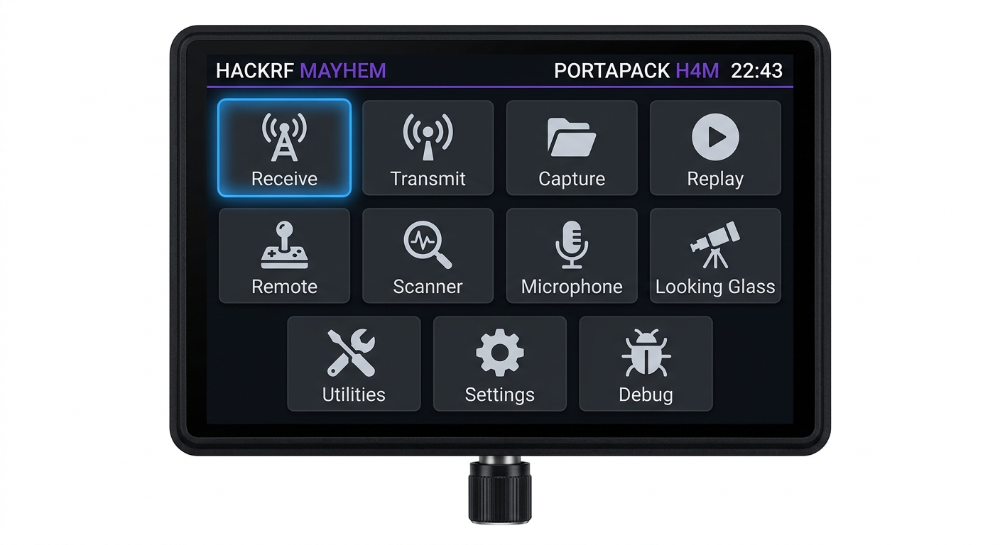
After boot, the Main Menu loads. You'll see a grid of app icons covering the main categories: Receiver, Transmitter, Capture, Replay, Tools, and Setup. A status bar at the top displays battery level, time, and signal information.
Navigating Apps
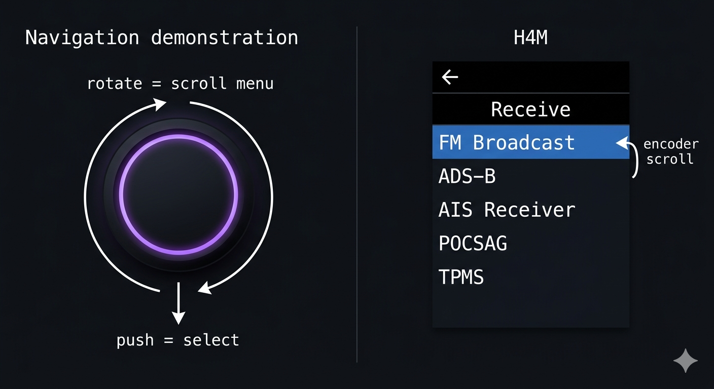
Use the rotary encoder to highlight an app icon (the selection highlight moves as you rotate). Push the encoder to open the highlighted app. Inside any app, press the Back button to return to the previous screen or the main menu.
Adjusting Display & Clock
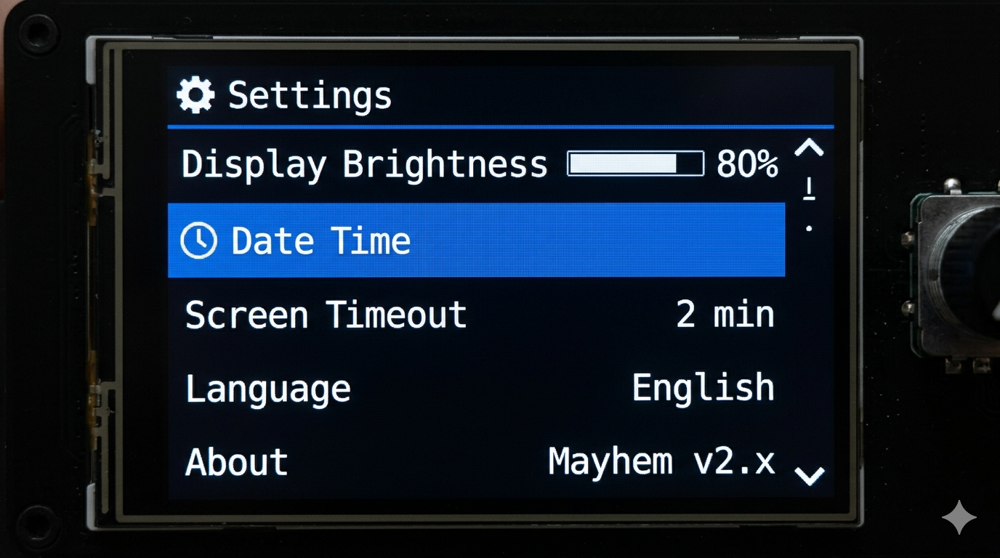
Navigate to Setup > Display to adjust screen brightness (rotate encoder to change value, push to confirm). Go to Setup > Date/Time to set the current date and time — this ensures accurate timestamps on captured files.
Connecting Antennas
Attach the Included Telescopic Antenna
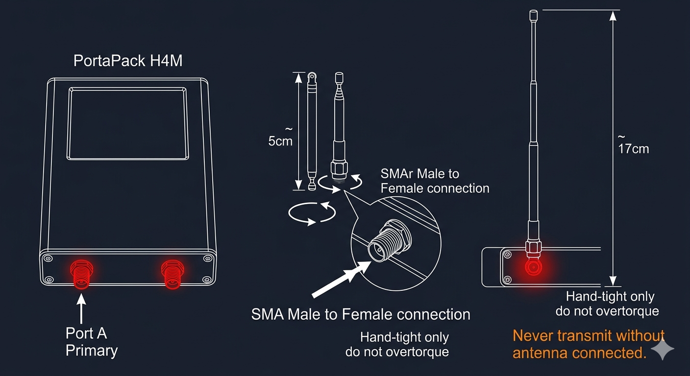
Thread the included telescopic antenna onto the SMA female port on the top of the H4M. Rotate clockwise until it is snug — finger-tight is sufficient, do not over-tighten as this can damage the SMA threads.
Extend to Optimal Length
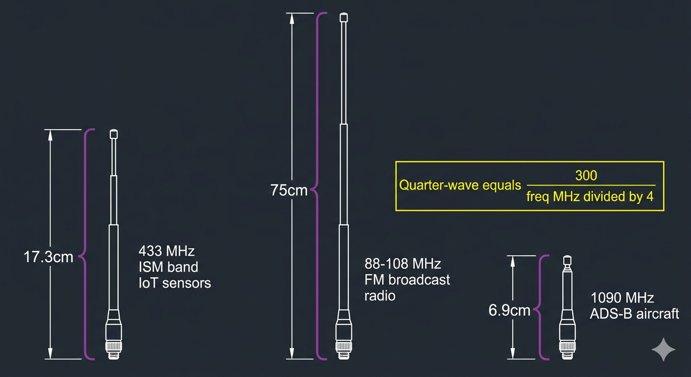
Extend the telescopic antenna to its full length for broadband reception. For best performance at a specific frequency, use the quarter-wavelength formula: length (cm) = 7500 ÷ frequency (MHz). For example, extend to approximately 17 cm for 433 MHz ISM signals.
Swap Antennas for Different Frequency Bands
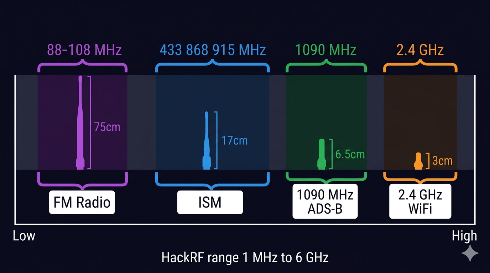
For best results in different bands, use purpose-built antennas: a short whip for 900 MHz (LoRa, GSM), a mag-mount vertical for VHF/UHF (137–500 MHz), or a ground plane antenna for ADS-B at 1090 MHz. All antennas must have an SMA male connector to fit the H4M port.
FM Radio Receiver
Open the FM Broadcast App
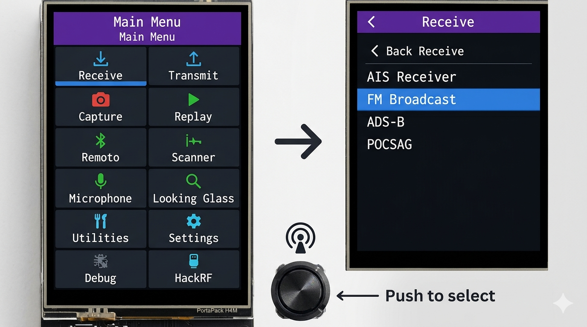
From the main menu, navigate to Receiver and then select FM Broadcast. The FM receiver app opens, showing a frequency display and signal strength meter.
Tune Your Frequency
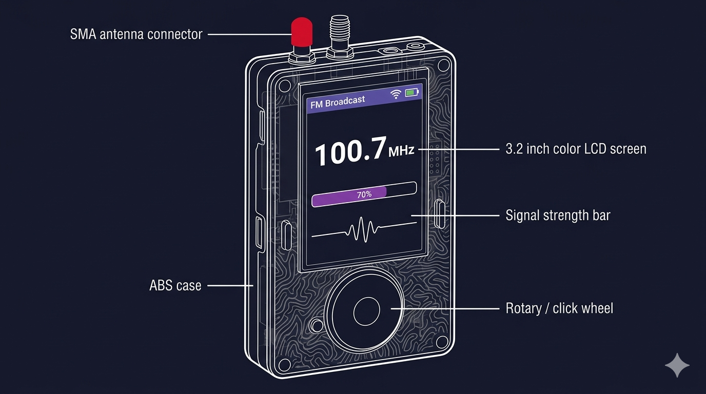
The frequency defaults to 100.0 MHz. Rotate the encoder to change frequency in 0.1 MHz steps. FM broadcast stations operate between 87.5 and 108.0 MHz. The signal strength bar fills when you land on a strong station — look for a sharp increase as you tune past a carrier.
Adjust Audio Output
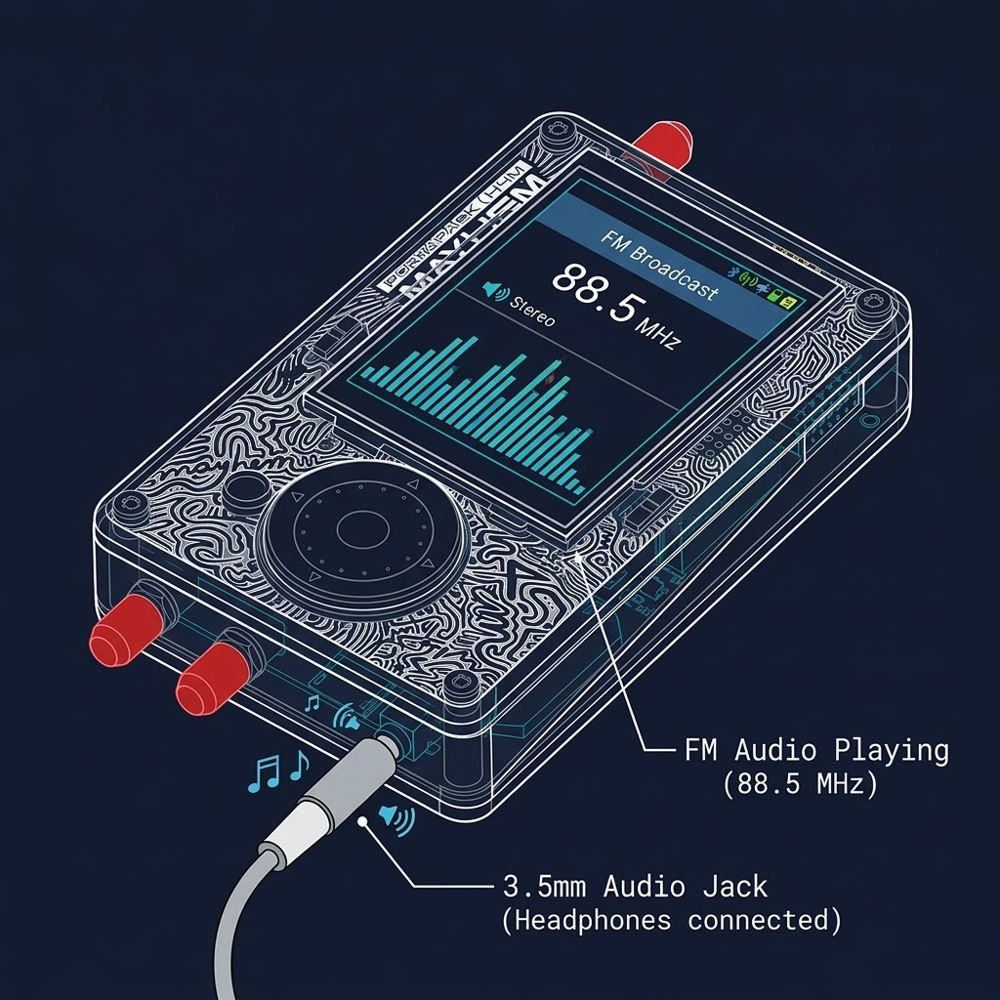
Audio plays through the built-in speaker by default. Plug headphones into the 3.5mm jack on the bottom edge for private listening — the speaker is muted automatically when headphones are connected. Adjust volume using the encoder while in the FM app.
Exit & Return
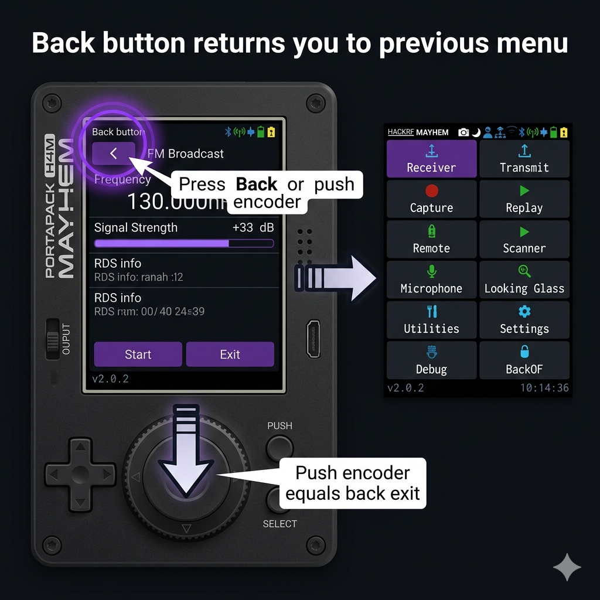
Press the Back button to return to the main menu. The last tuned frequency is remembered and will be restored the next time you open FM Broadcast.
ADS-B Flight Tracker
Open the ADS-B App
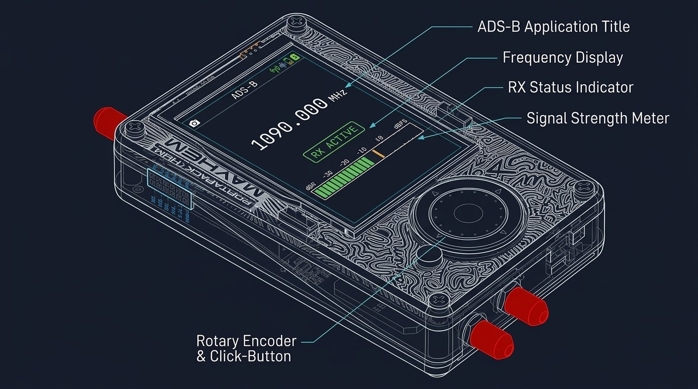
From the main menu, navigate to Receiver > ADS-B. The app loads immediately and begins listening on 1090 MHz, the universal ADS-B transponder frequency used by commercial and private aircraft worldwide.
Antenna Recommendation for 1090 MHz
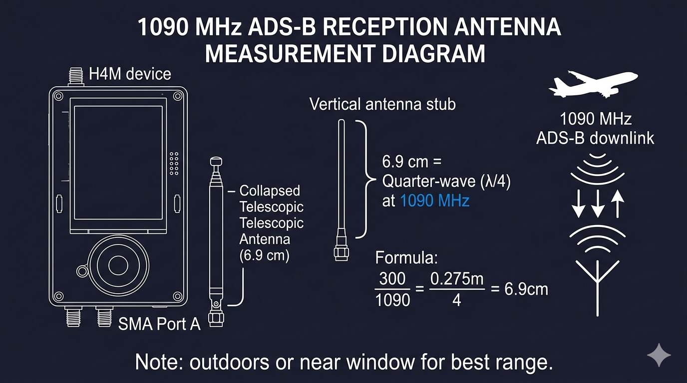
For best ADS-B reception, use a short stub antenna (≈6.5 cm) or a dedicated 1090 MHz patch antenna. The included telescopic antenna extended to about 6–7 cm also works. The built-in LNA in the H4M boosts sensitivity at this frequency.
Reading the Aircraft List
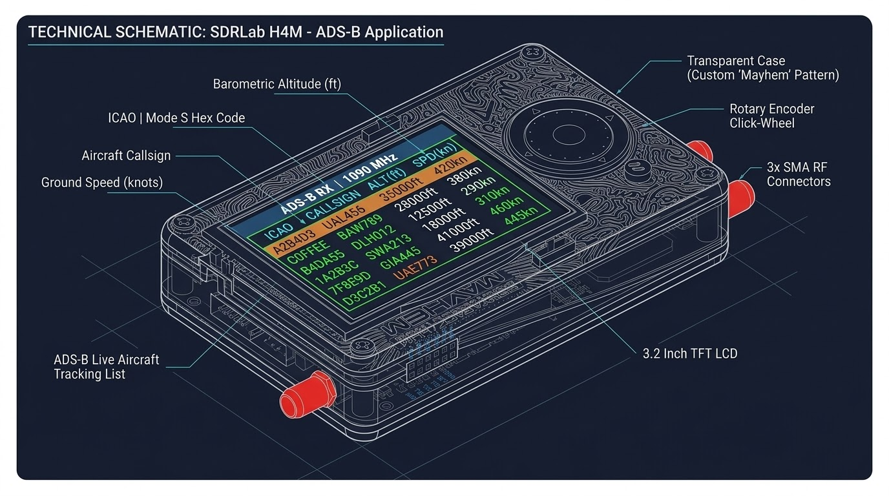
Aircraft within approximately 150 km line-of-sight appear in a scrollable list. Each entry shows the ICAO 24-bit hex address (unique aircraft identifier), callsign, altitude (in feet), and ground speed (knots). Entries refresh in real time as new ADS-B frames are received.
Aircraft Detail & Map View
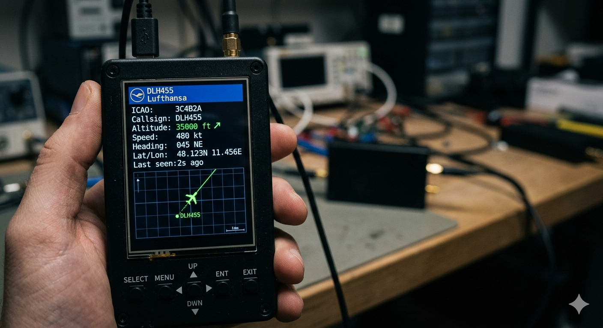
Highlight an aircraft and push the encoder to view full details including GPS coordinates, heading, squawk code, and message count. If you have a microSD card with map tiles installed (see Ch.2b), a live map view shows aircraft positions plotted geographically.
Spectrum Analyzer
Open the Spectrum App
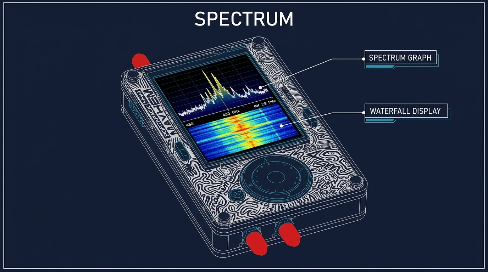
From the main menu, navigate to Tools > Spectrum. The spectrum analyzer opens and immediately begins displaying live RF energy as a scrolling waterfall display. The X-axis represents frequency, the Y-axis is time (newest at top), and colour represents signal power.
Set Centre Frequency & Span
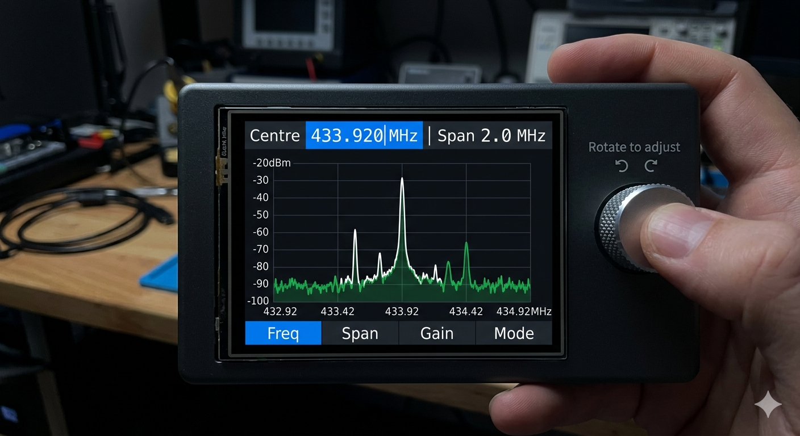
Use the encoder to adjust the centre frequency — the display re-centres as you rotate. Press the directional buttons to switch focus between frequency and span/gain fields. Reducing the span gives you a narrower, more detailed view; increasing it lets you survey a wider band at once.
Interpreting the Waterfall
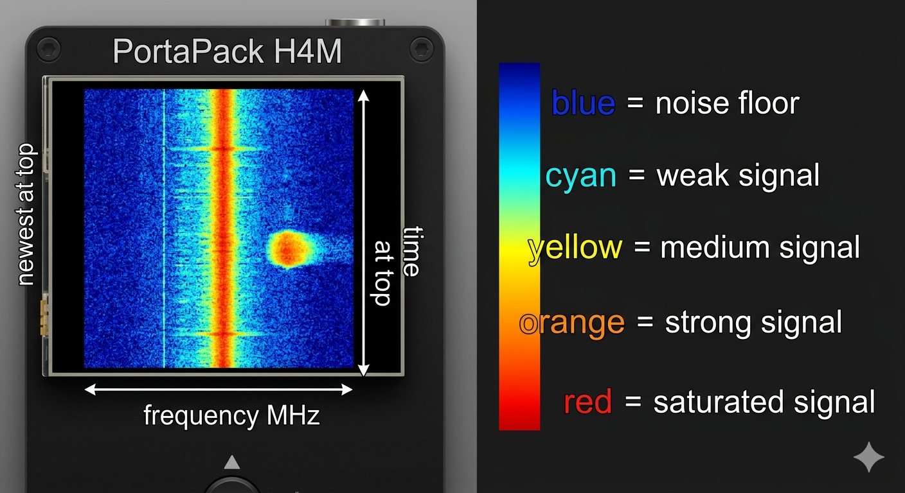
Bright or warm colours (yellow, orange, red) indicate strong RF energy; dark or cool colours (dark blue, black) indicate no or weak signal. A narrow bright stripe is a CW carrier or narrowband transmission. A wide bright block suggests a wideband signal like FM or Wi-Fi. Use this tool to identify active frequencies before tuning a receiver app to them.
Transmit & Signal Generator
Open Signal Generator
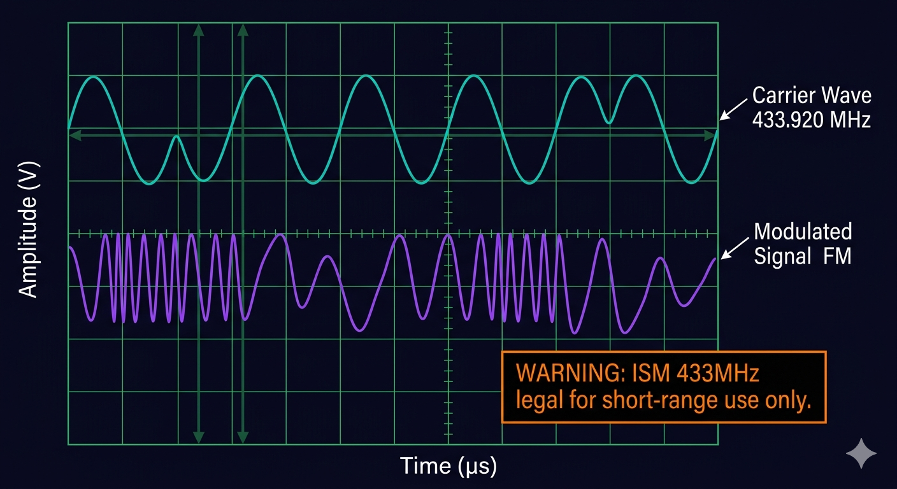
From the main menu, navigate to Transmitter > Signal Generator. This app lets the H4M transmit a continuous or modulated test tone, useful for antenna testing, RF path verification, and lab bench work.
Set Frequency & Waveform
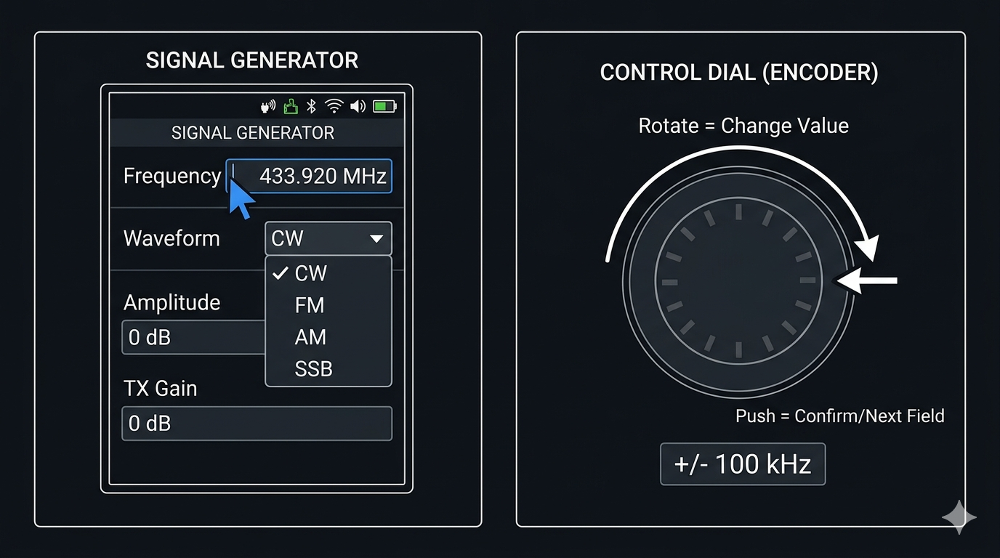
Use the encoder to set the desired centre frequency. Press the directional buttons to move between fields, then rotate the encoder to select the waveform type: Sine (pure carrier), Square, Triangle, or Sawtooth. Each waveform has different harmonic content — sine is cleanest for antenna testing.
Set Output Power & Start Transmitting
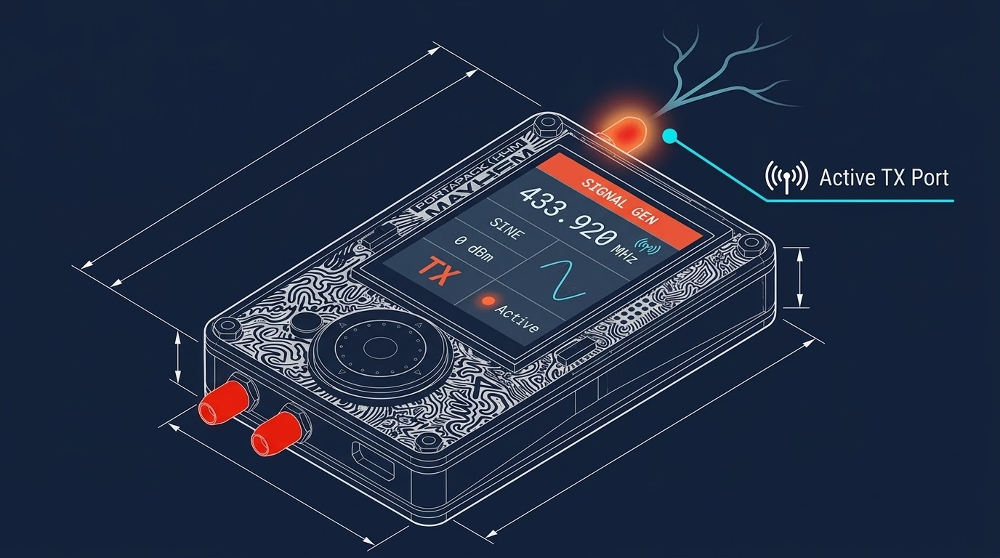
Adjust the TX gain / output power setting (0 = minimum, maximum varies by firmware build). Start at the lowest power level needed for your test. Push the encoder to begin transmitting — the status indicator changes to confirm the RF stage is active.
Stop Transmission
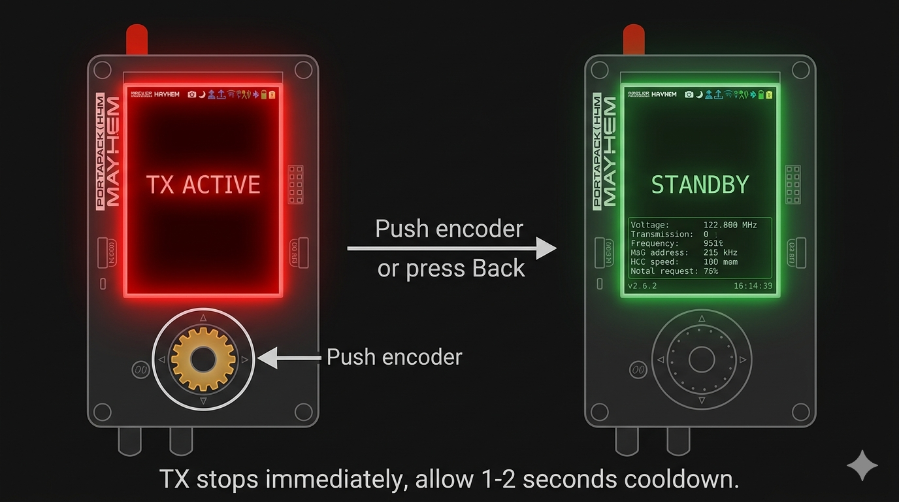
Push the encoder again or press the Back button to stop transmission immediately. Always stop transmission when done — leaving the transmitter running drains the battery and may cause interference. Verify the status indicator has returned to receive/idle state.
POCSAG & Pager Decode
Open the POCSAG App
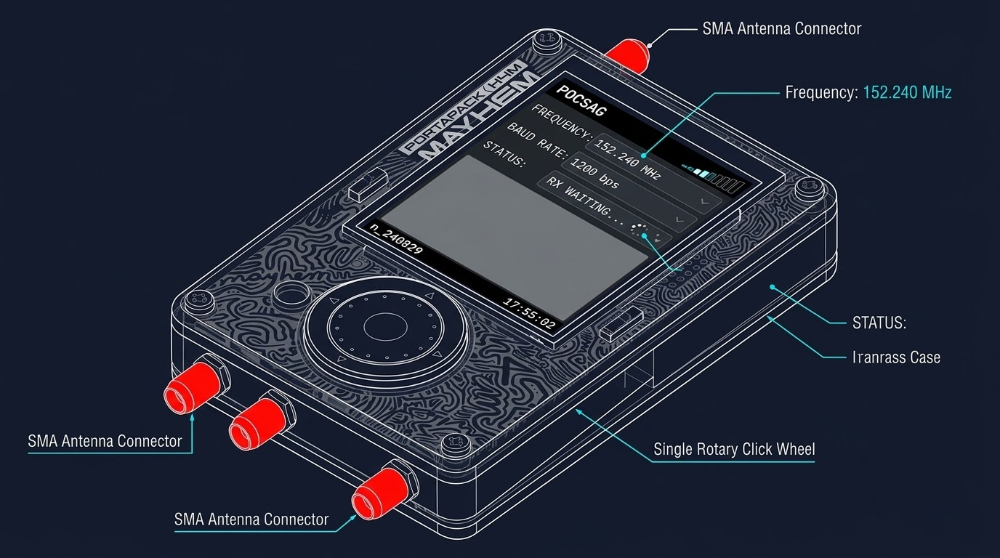
From the main menu, navigate to Receiver > POCSAG. POCSAG (Post Office Code Standardisation Advisory Group) is a widely-used one-way paging protocol still active in hospitals, emergency services, and industrial facilities in many countries.
Set the Correct Pager Frequency
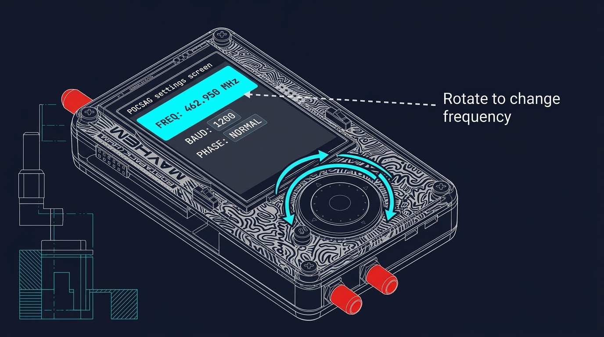
POCSAG transmissions are most commonly found between 152–174 MHz (VHF) and 460–470 MHz (UHF), though exact frequencies vary by country and operator. Use the encoder to enter the local pager frequency. If unknown, first use the Spectrum Analyzer (Tools > Spectrum) to locate active narrowband carriers in those bands.
Decode Live Pager Messages
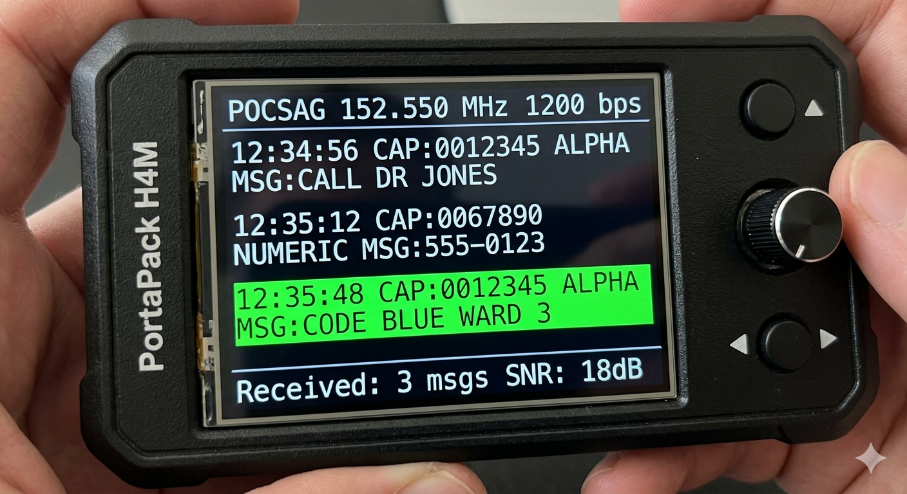
Once tuned to an active frequency, decoded POCSAG messages appear in real time. Each entry shows a timestamp, the RIC address (pager device ID), the function code, and the message text (numeric or alphanumeric, depending on transmission type). Messages scroll upward as new ones arrive.
Capture & Replay
Capture records raw IQ (In-phase/Quadrature) samples directly to your SD card. Replay transmits them back through the RF output — effectively reproducing any signal you've recorded. A formatted microSD card (Ch.2b) is required for both.
Record a Signal with Capture
From the main menu, navigate to Capture. Set the centre frequency to the signal you want to record (e.g., 433.92 MHz for ISM sensors). Set the sample rate — higher rates capture wider bandwidth but create larger files. Press the encoder to start recording; press again to stop. The file is saved to CAPTURES/ on the SD card as a .C16 file.
Play Back with Replay
Navigate to Replay from the main menu. Browse the file list on the SD card and select your .C16 capture file. Set the same frequency used during capture. Press the encoder to transmit — the H4M re-broadcasts the recorded IQ samples through the RF output at the original frequency and bandwidth.
Flipper Zero Compatibility (.sub Files)
The Flipper TX app in Mayhem can replay .sub signal files from the Flipper Zero ecosystem. Copy .sub files to your SD card and open them via Replay. This allows sharing signal libraries between devices in your RF lab setup.
PC-Connected SDR Mode
The H4M also works as a USB-connected SDR for your computer, letting you use software like SDR#, GQRX, or GNU Radio — unlocking full waterfall displays, demodulation plugins, and larger-screen operation. A USB-C data cable is required.
Connect via USB-C and Install Drivers
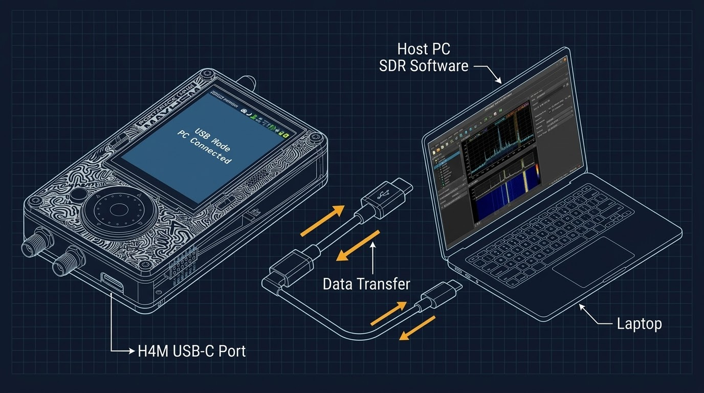
Power off the H4M first. Connect a USB-C data cable between the H4M and your computer. In PC mode the device draws power from USB — no battery is consumed.
- Windows: Install the WinUSB driver using Zadig (zadig.akeo.ie) — select "HackRF One", then click "Install WinUSB".
- macOS: No drivers needed — HackRF is natively supported via libusb.
- Linux: No drivers needed. Add udev rules if device not accessible without root:
sudo cp 53-hackrf.rules /etc/udev/rules.d/
Open SDR# (Windows) or GQRX (Linux / macOS)
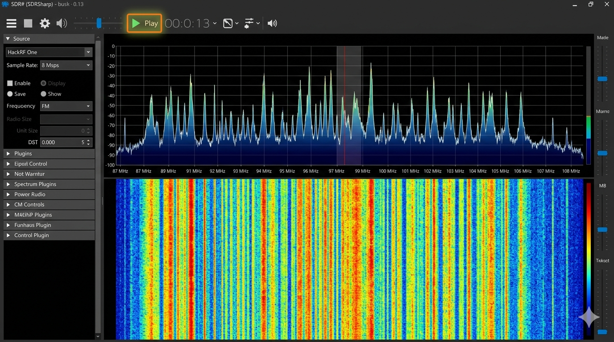
Launch SDR#. In the Source dropdown, select HackRF One. Set sample rate to 8 Msps as a starting point. Click Start (►) to stream live RF spectrum. For GQRX on Linux/macOS: launch GQRX, select HackRF One in device configuration, set sample rate to 8M.
Open IQ Captures from SD Card in PC Software
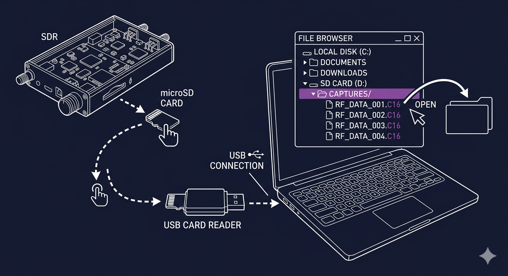
Capture files recorded on the H4M are stored in the CAPTURES/ SD folder as .C16 raw IQ files. Open them on your PC:
- SDR#: File → IQ file source → select .C16 file
- GQRX: File → Open I/Q File → select .C16 file
- GNU Radio: Use a File Source block with Complex Int 16 type
capture_433mhz_8000kHz.C16 = 8 MHz sample rate.CAPTURES/ open directly in PC software as .C16 files.
Firmware Update
Check Your Current Firmware Version
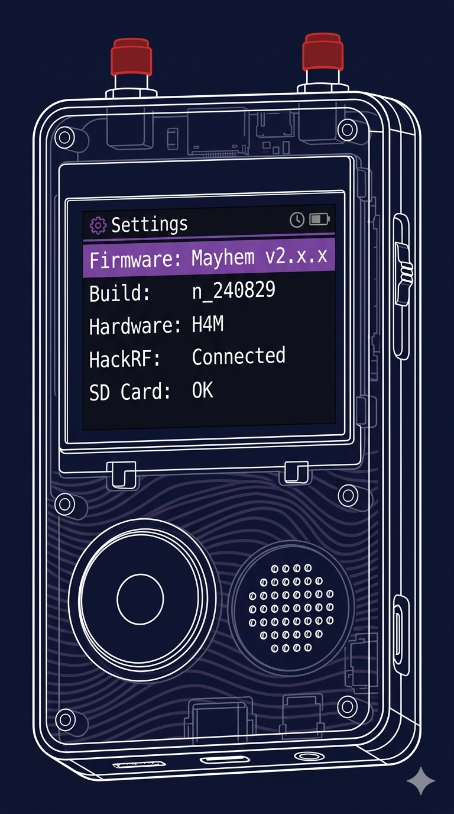
From the Mayhem home screen, navigate to Settings. The firmware version string and build date are shown at the top of the screen. The build date format is YYYYMMDD — for example, n_240829 means August 29, 2024.
Compare your version with the latest release at github.com/portapack-mayhem/mayhem-firmware/releases. If you are already on the latest version, you can skip the remaining steps.
Download the Latest Mayhem Firmware
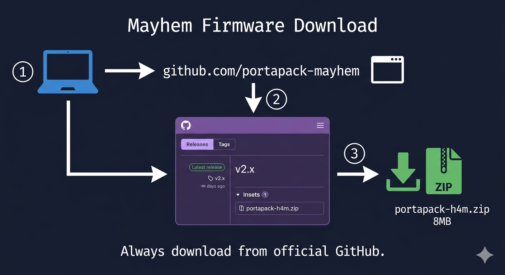
On your PC, navigate to the official Mayhem firmware releases page: github.com/portapack-mayhem/mayhem-firmware/releases. Download the latest .tar.gz release archive. Always use official releases — never flash firmware from unofficial sources.
Extract the Firmware Files
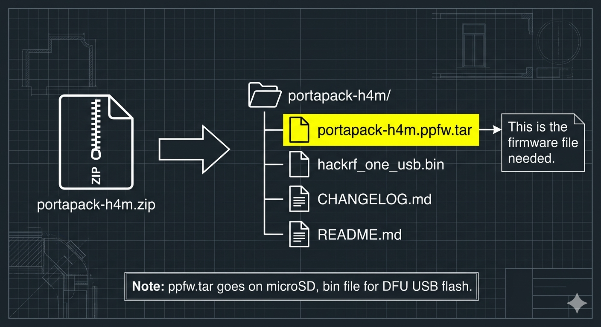
Extract the archive. Inside, you'll find two critical files: hackrf_one_usb.bin (the HackRF USB firmware) and portapack-h1_h2-mayhem.bin (the PortaPack application firmware). Both files must be flashed in sequence.
Power Off the H4M
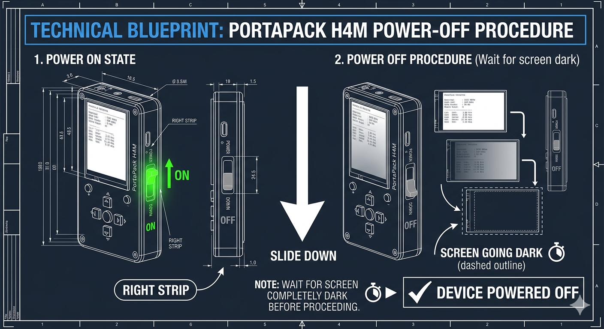
Hold the power button for 2 seconds to perform a clean shutdown. Wait until the screen goes completely dark before proceeding. Do not attempt to enter DFU mode while the device is still running.
Enter DFU Mode
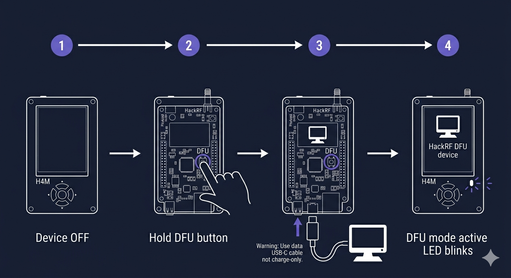
Locate the DFU button — a small recessed button near the USB-C port. Hold the DFU button, then connect the USB-C cable to your PC, then release the DFU button. The device will enumerate as a DFU device. No screen output is shown in DFU mode — this is normal.
hackrf_info after connecting — it should report a device in DFU mode if done correctly.Flash the Firmware
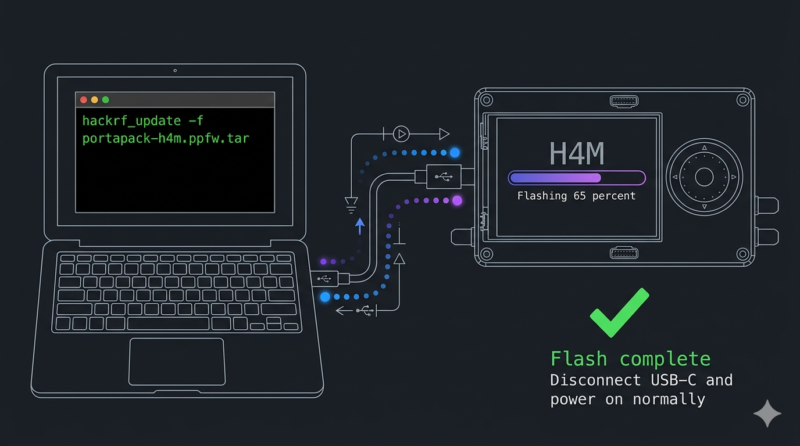
With the HackRF tools installed on your PC, run the following commands in order:
hackrf_update -f hackrf_one_usb.bin
hackrf_update -f portapack-h1_h2-mayhem.binEach command takes 30–90 seconds. Wait for "Update complete" before disconnecting.
Troubleshooting
Device Won't Power On
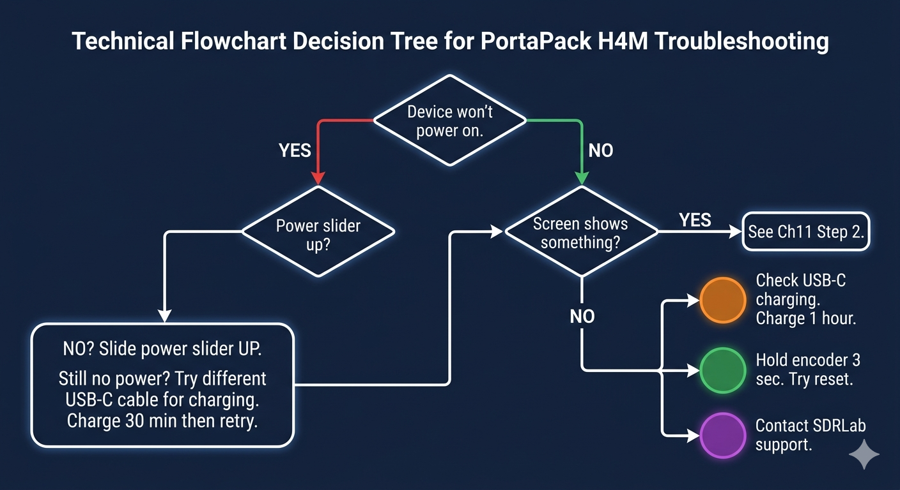
Connect the H4M via USB-C and charge for at least 1 hour using a known-good charger (5V/1A or greater). Then try holding the power button for a full 3 seconds. If the device still doesn't respond, try a different USB-C cable — many cables are charge-only with no data lines, but this can also affect charging behaviour on some units.
Screen On but Device Unresponsive
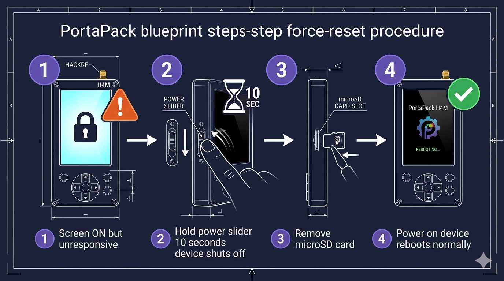
If the LCD is lit but buttons and encoder produce no response, try a soft reset: hold the rotary encoder button down for 3 seconds. If that fails, perform a hard reset: hold the power button for 10 full seconds until the device powers off, then power on normally.
No Audio Output
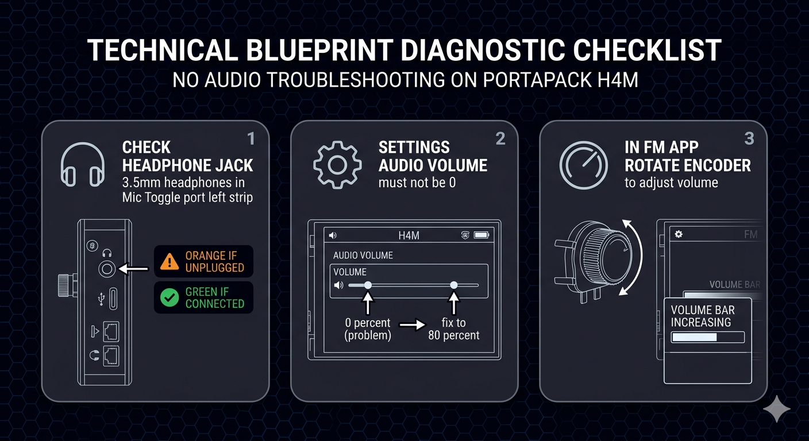
First, check that headphones are fully seated if using the 3.5mm jack. Navigate to Setup > Audio and verify the volume is not set to zero or muted. In the FM Broadcast app, volume is also controlled by the encoder while the frequency display is active — try rotating the encoder after confirming you're tuned to a station.
No Signals Detected
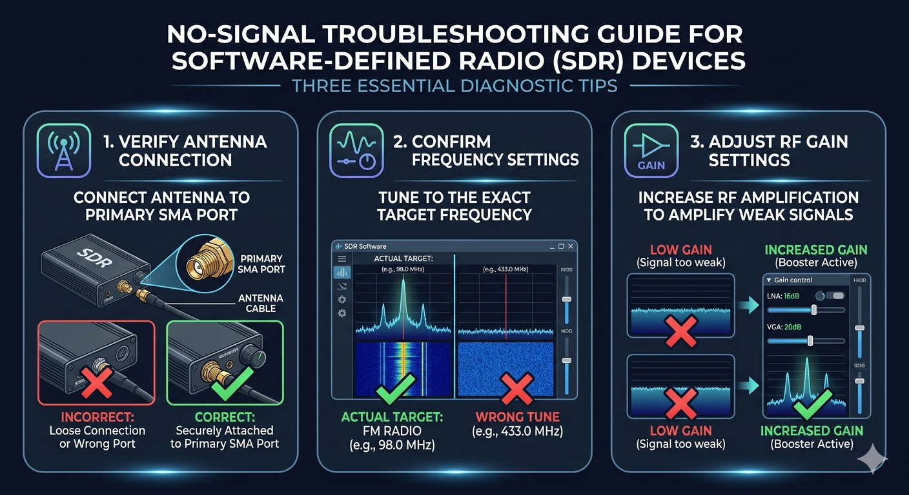
Verify the antenna is firmly screwed on (a loose antenna is the most common cause of poor reception). Confirm you're tuned to the correct frequency band for the signal type. Open Tools > Spectrum to visually confirm RF activity in your area — if the waterfall is completely flat, check the antenna connection or try a different location.
github.com/portapack-mayhem/mayhem-firmware/wikiMayhem App Catalog
Mayhem firmware includes 60+ built-in applications. Below is a full category map to help you explore the rest.
Receivers
- Broadcast FM — FM radio 87.5–108 MHz
- ADS-B — Aircraft transponders, 1090 MHz
- AIS — Marine vessel tracking, 161/162 MHz
- ACARS — Aircraft data link, 129/136 MHz
- POCSAG / Flex — Pager messages, 152–470 MHz
- NOAA APT — Weather satellite images, 137 MHz
- APRS — Amateur packet, 144.39 MHz (NA) / 144.80 MHz (EU)
- TPMS — Tyre pressure sensors, 433/315 MHz
- BLE — Bluetooth Low Energy scanner
- ERT / AMR — Utility meter reader
- SSTV — Slow-scan television image decoder
Transmitters
- FM TX — FM broadcast transmitter
- AM TX — AM transmitter
- SSB TX — Single sideband voice
- APRS TX — Packet radio beacon
- BLE TX — Bluetooth Low Energy beacons
- GPS Simulator — GPS signal simulation (⚠️ licensed use only)
- OOK TX — Generic on-off keying transmitter
Signal Tools
- Spectrum Analyzer — Wideband RF spectrum view
- Capture — Raw IQ recording to SD card (.C16)
- Replay — Play back captured IQ from SD card
- Frequency Scanner — Auto-scan for active signals
- Looking Glass — Panoramic spectrum, up to 2 GHz wide
- Signal Generator — CW / tone / noise source
Utilities
- File Manager — Browse / rename / delete SD files
- Frequency Manager — Custom frequency bookmarks
- Map Viewer — OSM offline map tiles from SD card
- Antenna Length — Quarter / half-wave calculator
- Clock — Real-time clock display
- Calculator — RF engineering calculator
Games
- Doom
- Tetris
- Breakout
- Pong